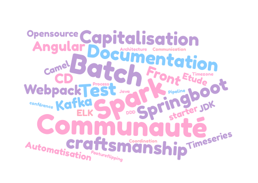

Une équipe transverse ?
Une initiative du devinterne.
Priorisation difficile des chantiers techniques transverses
-
Outillage
(Jenkins, Sonar, Artifactory)
-
Amélioration du Front
(Build, Lib, Atomic Design)
-
Continuous Delivery
(Pipeline environnements)
-
Amélioration du SI
(Feature Flipping, Multitenant)
Point de vigilence : le projet front d'EDELIA
Peu de capitalisation
-
Sur les montées de versions
(Spring Boot, JDK, Cassandra...)
-
Sur les technologies
(Kafka, Batch Spark, Camel...)
-
Sur les problématiques récurrentes
(Timeseries, Timezone, flux...)
Besoin d'une communauté plus active !
Proposition
Une équipe transverse !

Objectifs
-
Animer la communauté
(Inner sourcing)
-
Dégrossir les chantiers complexes
(Etudes, PoC)
-
Fluidifier les process
(CD, Feature Flipping)
-
Rendre EDELIA visible, attirer les talents
(Open Source, Conférences)
-
Aider les architectures
(Délégation)
Backlog
Alimenté par :
- Dominique VIENNE, Hervé LE BOULER, Jamal HLALI
- Équipe transverse
- Les products owners
- Communauté de pratique des développeurs
Priorisé par Dominique, Hervé et Jamal
sur la base d’un ROI clairement identifié